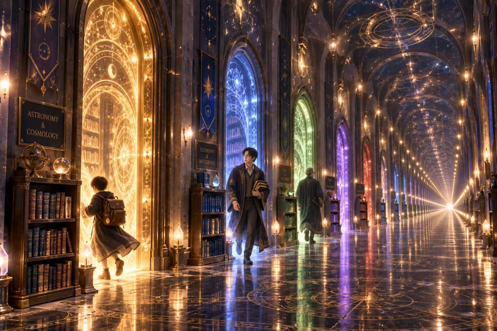
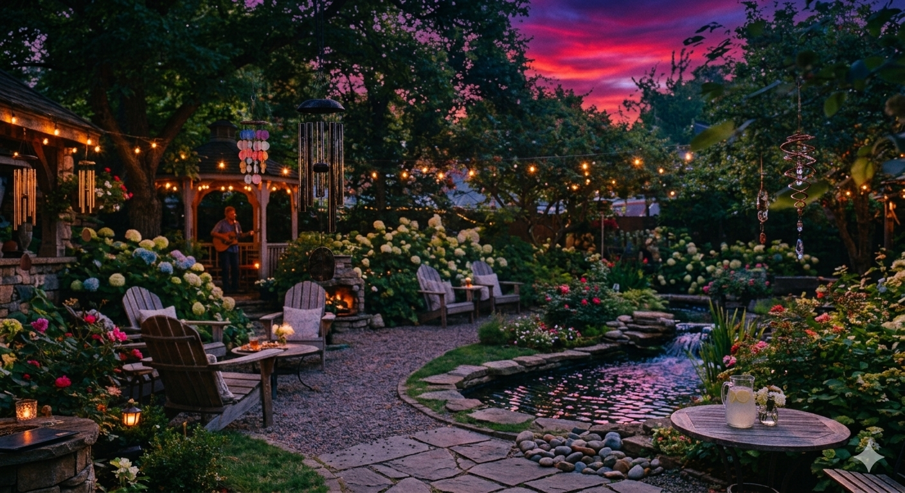
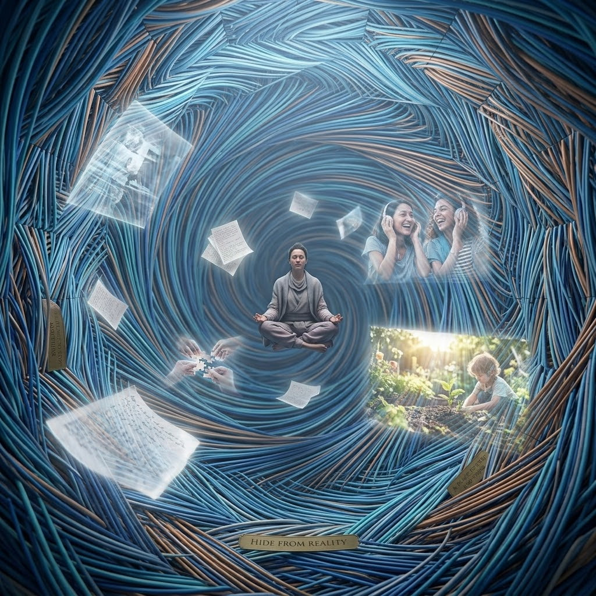
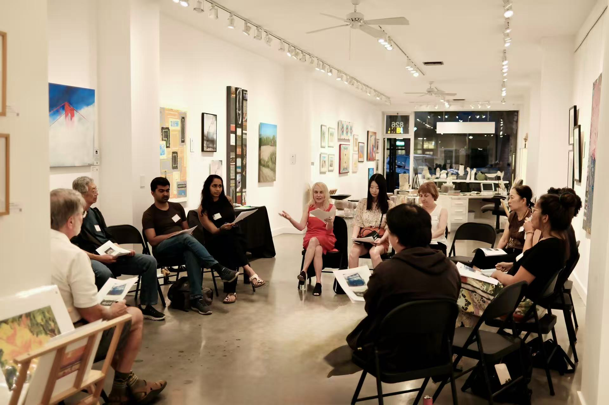
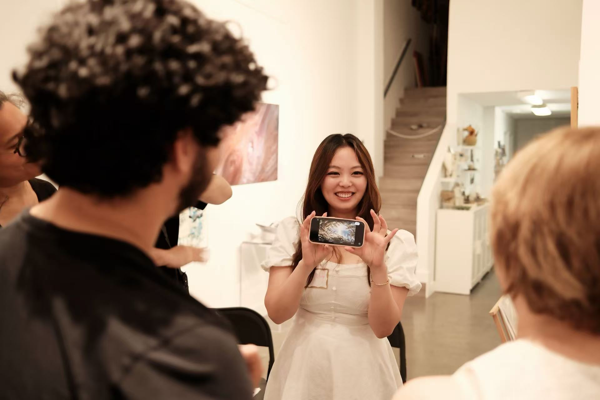
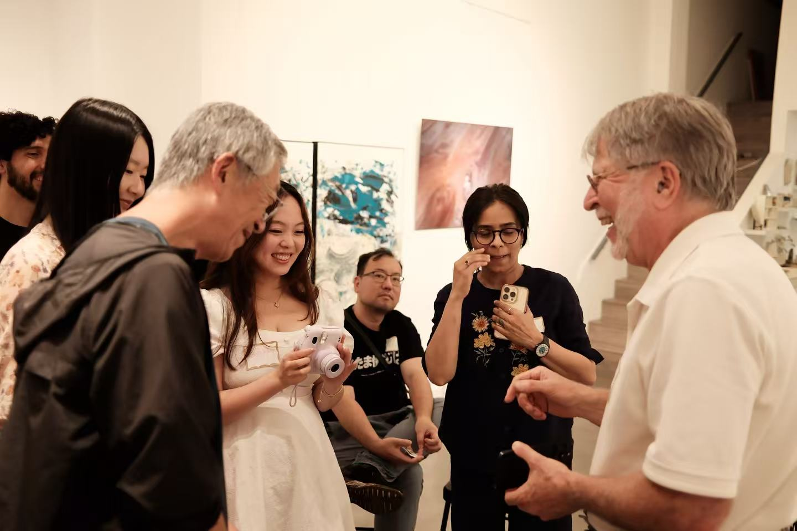

Gathering 05 · Selected Works
Design a Place You Wish Existed
What is a place you wish existed in the real world? At AIC #5, participants explored that question through art, conversation, and AI image-making. Here are four of the places they created.
The Outputs
Four imagined places
A hall of discovery, a garden at dusk, a woven refuge, and a coast filled with light. Each image gives a different atmosphere a visible form. Select an image to view it in full.



From the Evening
Imagining, making, and sharing
The evening moved from looking at art together to imagining places of our own. Sharing the images opened a conversation about what those places might make possible in everyday life.


